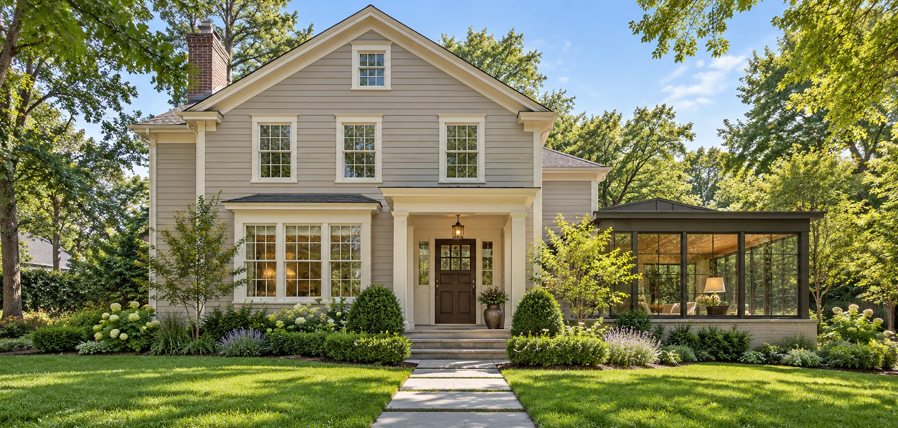

Home / main hero
- Filename
gc4-hero-home.png- Size / aspect ratio
- 2400x1350 · 16:9 · Wide
Ready-to-paste prompt
A renovated 1920s house seen from its front garden: original painted wood siding, a restored dark-stained front door with its old hardware, retained window trim, and a restrained modern garden-room extension at the side; fresh planting, clear morning light. House centered with garden on both sides. Look for this site: Renovated century-old homes: original wood floors and painted trim kept, plaster walls, muted plum, mauve-gray and stone tones beside clean new work. Professional remodeling-portfolio photography, exactly like the project photos on the websites of top design-build firms (Airoom, BOWA, Case Architects & Remodelers, Normandy Remodeling, Neil Kelly). Bright, even natural daylight with the room's own lights switched on; balanced exposure so windows show the trees and sky outside instead of glowing white; true, clean colors; straight vertical lines; wide but not distorted; sharp from front to back. Light, believable styling: fresh flowers, a bowl of lemons or green apples, a few cookbooks, a folded towel, never cluttered. Upscale but real materials with real texture: wood grain, stone veining, tile grout lines, brushed brass. Exteriors on a clear day, or at twilight with every interior light on and the sky still blue, with neat lawn and planting. Contractors, owners and crew members are men, exactly as described in each photo: mostly white, sometimes Hispanic, like the real construction trade. Homeowners are exactly as described. Everyone looks like an ordinary, real person of average build in normal clothes, caught in a candid moment, never a model or actor: real skin, ordinary faces, no styled beards, no perfect teeth. Do not add people who are not described, and do not change anyone's gender, age or ethnicity. Avoid: Moody or cinematic color grading, teal-and-orange, golden-hour glow, dramatic dark shadows, haze or mist, heavy background blur, fantasy perfection, anything that looks like a movie still or an obvious AI image. No text, logos, brand marks, signs, house numbers, readable writing, recognizable landmarks or watermarks. No arches of any kind: no arched doorways, windows, openings or mirrors.